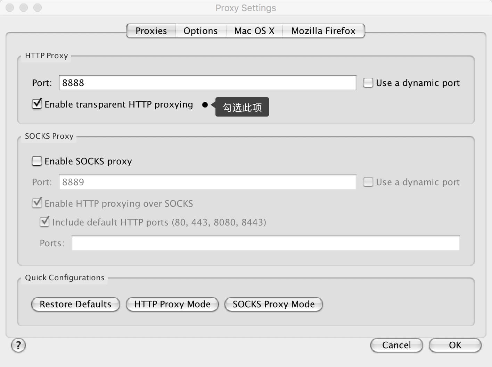

为了方便大家使用，我已经将所用版本上传百度云盘，请大家自行下载，下载解压后直接拖进应用程序文件夹即可（非 DMG 安装包）Charles-V3.11 for Mac ，大家也可以自行通过其他方式下载；
注：如果提示文件已损坏，请尝试更新系统（虽然不一定有用，哈哈） or 通过其他方式下载；
如果你已经安装可忽略此提示；
前言
我想，如果你是个善于利用搜索引擎的人，那么在 Google 中输入「Charles 使用」等相应的关键字，便会出现一大把文章。
不过呢，之所以会有这篇文章，就是因为今天在安装和初步使用的过程中，遇到了些问题，而目前搜索出来的绝大数文章并没有提及（或者解决办法已经过时）。所以，我在此记录下来，希望能帮助到通过搜索找到这的朋友们。
付费 & 正版
Charles 是收费软件，可以免费试用 30 天。试用期过后，未付费的用户仍然可以继续使用，但是每次使用时间不能超过 30 分钟，使用过程中不定时会中断 5 秒钟，并且启动时将会有 10 秒种的延时。因此，该付费方案对广大用户还是相当友好的，即使你长期不付费，也能使用完整的软件功能。只是当你需要长时间进行封包调试时，会因为 Charles 强制关闭而遇到影响。
关于价格，见下表：
| License | Pricing |
|---|---|
| 1-4 User Licenses | US$50 / license |
| 5+ User Licenses | US$40 / license (20% discount) |
| 10+ User Licenses | US$30 / license (40% discount) |
| Site License | US$400 |
| Multi-Site License | US$700 |
50 刀的价格虽然不白菜，但试用版并未阉割功能，只是在使用体验上稍差，这可称得上良心啊。虽然我暂时不会购买，但我依然会使用正版，希望你也如此。
使用
安装后直接打开 Charles 即可使用;
保证电脑和手机在同一局域网内（就是用的同一个 wifi，哈哈）；
然后看图设置：
接着

然后手机设置代理为手动：
（不会怎么办？各平台修改代理方式请自行百度~ 哈哈）
服务器地址就写自己当前电脑的局域网 ip，端口写上图显示的端口号（例：上图端口号为 8888）
查看局域网ip：mac 下打开终端输入
|
|
输入代理后保存返回（ios 直接返回即可）
稍后电脑上charles会弹出 下图：
点击 allow 即可（别点错了，点错了我也不知道会咋样，哈哈！有兴趣的同学可自行尝试，吼吼）
到这里如果你没有出现其他异常情况，那么你已经可以正常使用了（如果还不行的话，你应该砸电脑了，哈哈哈）
停用VPN
当我打开 Charles（Mac OS X Proxy 已选择），按理说，我立刻就能看见源源不断的网络请求出现在 Charles 的界面中啦，可为什么始终是一片空白呢？
一番搜索，终于在这里 Charles proxy not working with Chrome 找到了答案：
For anyone else using VPN: Charles must be turned on before VPN. So quitting VPN after turning on Charles won’t work either.
没办法，为了正常使用 Charles，只能暂时把梯子撤了(请暂时关闭vpn链接)：

乱码
刚开始用着挺好的啊，怎么一言不合，就来个乱码呢？

于是，便在 Google 中输入「Charles 乱码」，我保证，你能搜到的绝对是这样的答案：

可我告诉你，反正我尝试了在各种地方进行添加，最后都没有成功。
而我最终解决了乱码的问题，但根本没有涉及到 Info.plist。你只要确保，我接下来提及的问题，你有正确进行设置。
安装 SSL 证书
Mac 端
首先去 http://www.charlesproxy.com/ssl.zip 下载 CA 证书文件，然后双击 .crt 文件，选择「总是信任」按钮，在钥匙串访问中即可看到添加成功的证书。
看看，人家说的多么简单啊，可事实呢？当我访问上述网址时，出现的是如下的文字：
If you are running Charles v3.10 or later, please go to Charles and consult the SSL Proxying submenu in the Help menu, for instructions on installing your new Charles Root Certificate.
我那蹩脚的英文告诉我：如果你使用的是 v3.10 及之后的版本，安装方法已经变了，正确的姿势：启动 Charles 软件，在菜单中找到 Help -> SSL Proxying -> Install Charles Root Certificate. 如下图所示：

随后是这样的：


移动端
步骤：Help -> SSL Proxying ->Install Charles Root Certificate on a Mobile Device…

根据这个提示复制网址 http://charlesproxy.com/getssl 然后在手机浏览器内打开即可，然后会提示证书安装，大家根据提示安装即可~
Mac 上的设置
在 Charles 的工具栏上点击设置按钮，选择 SSL Proxy Settings，选中 Enable SSL Proxying。（别急，选完先别关掉）
SSL 选项卡的 Locations 里填写要抓包的域名和端口，点击 Add 按钮，在弹出的表单中 Host 填写域名。比如填api.instagram.com，Port 填 443

关于乱码，如果没有做这项操作，则肯定会出现乱码。而至于否是在 Info.plist 中添加 UTF-8 的字段，反正最后我没加，但一切正常。
所以这个坑，我也是无意间解决的。
iPhone 上的设置
首先我们需要获取 Charles 运行所在电脑的 IP 地址，Charles 的顶部菜单的 “Help”->”Local IP Address”，即可在弹出的对话框中看到 IP 地址，如下图所示：

然后就是在 iPhone 上的一系列操作，又是很简单，有木有！
可是，为什么尼玛我怎么试都不成果呢？！iPhone 上浏览器网址都打不开了….于是又尝试了另一种方式，在终端敲入 ifconfig en0：